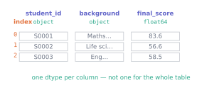

Real data is a table: columns with names, columns with different types, values that are missing. A NumPy array cannot express that — it insists every element share one type, and it identifies columns by number, so P6 had you writing raw[:, 2] and remembering what 2 meant.
pandas keeps NumPy underneath and adds the two things a table needs: names and mixed types. It is the tool you will touch every single day, which is why it gets two units.
12.1 Before you start
You should be able to:
work with arrays, shapes and boolean masks — P6, P7;
Quick check. In raw[:, 2], what does the 2 refer to, and what breaks if a column is inserted before it?
TipShow the answer
The third column, by position. Insert a column anywhere before it and 2 now means something else — silently. That fragility is most of the reason this unit exists.
12.2 The idea
import pandas as pdcohort = pd.read_csv("../data/cohort.csv")print(cohort.shape)cohort.head()
(240, 7)
student_id
background
diagnostic_score
hours_practice
final_score
completed
started_on
0
S0001
Mathematics or Physics
89.1
12.9
83.6
True
2026-09-23
1
S0002
Life sciences
42.4
22.8
56.6
True
2026-09-25
2
S0003
Engineering
68.4
1.7
58.5
True
2026-09-25
3
S0004
Computing
64.3
7.5
67.5
True
2026-09-24
4
S0005
Computing
69.0
13.5
73.8
True
2026-09-24
A DataFrame is a table. Each column is a Series — an array with a name and a dtype of its own — and all the columns share an index identifying the rows.

Figure 12.1: The three parts of a DataFrame: an index naming the rows, column labels naming the columns, and a dtype per column. The dtype is per column, which is what a NumPy array cannot do.
12.3 The mechanics
12.3.1 The four things you always do after loading
Shape tells you whether you loaded what you expected. dtypes tells you what pandas decided each column was. isna().sum() counts missing values per column. Doing these three before anything else takes ten seconds and catches most loading disasters.
Notice final_score came in as float64 and background as object — pandas’ name for “text, or mixed”. Notice also that one final_score and one background are missing, which matches the file’s planted defects.
12.3.2 Never trust the inferred type
pandas guesses well and is not always right. Convert deliberately, and let it fail loudly if the data disagrees:
errors="raise" is the important part. The alternative, errors="coerce", silently turns anything unparseable into NaT/NaN — convenient, and a good way to lose data without noticing. Use raise first; reach for coerce only when you have decided that unparseable values should become missing, and then count how many did.
12.3.3 Selecting columns and rows
print(type(cohort["final_score"]).__name__) # one column -> Seriesprint(type(cohort[["final_score", "background"]]).__name__) # a list -> DataFrame
Series
DataFrame
One name gives a Series; a list of names gives a DataFrame. The doubled brackets are not a typo — they are a list inside the selection.
For rows, use .loc (by label) or .iloc (by position):
print(cohort.loc[0, "student_id"]) # label 0, that columnprint(cohort.iloc[0, 0]) # first row, first columncohort.loc[0:2, ["student_id", "final_score"]]
S0001
S0001
student_id
final_score
0
S0001
83.6
1
S0002
56.6
2
S0003
58.5
.loc slices are inclusive of the end label — loc[0:2] gives three rows. Everywhere else in Python the end is excluded. It is an inconsistency worth knowing rather than being caught by; .iloc[0:2] gives two rows as you would expect.
12.3.4 Selecting rows by condition
high = cohort[cohort["final_score"] >=75]print(f"{len(high)} students scored 75 or more")quantitative = cohort[cohort["background"].isin(["Computing", "Engineering"])]print(f"{len(quantitative)} from computing or engineering")
25 students scored 75 or more
106 from computing or engineering
Combine conditions with & and |, each in its own parentheses — the same rule as P6:
selected = cohort[(cohort["final_score"] >=60) & (cohort["hours_practice"] <15)]print(f"{len(selected)} scored 60+ while practising under 15 hours")
The arithmetic is elementwise across the whole column, exactly as in P7 — pandas is NumPy underneath.
12.3.6 The trap that catches everyone
subset = cohort[cohort["final_score"] >=75]subset["flag"] =True# pandas may or may not be modifying a copyprint(f"{len(subset)} rows flagged")
25 rows flagged
Selecting rows may give you a view or a copy, and pandas does not promise which. Writing to the result is therefore unreliable — sometimes it silently fails to stick, sometimes it warns. The fix is to say what you want:
Three rows excluded, and you can see exactly which and why: one missing score, one missing background, one impossible score of 187. That table is a result, not a byproduct — P9 writes it to a file.
Exercise 1 What is the difference between cohort["final_score"] and cohort[["final_score"]]?
TipShow the solution
The first gives a Series — one column, one dimension. The second gives a DataFrame with one column, because the inner brackets are a list of column names.
It matters when the next step expects one or the other. .mean() on a Series gives a number; on a DataFrame it gives a Series with one entry.
Exercise 2 This is meant to flag high scorers in the original table. It does not. Why, and what are the two ways to fix it?
high = cohort[cohort["final_score"] >=80]high["distinction"] =True
TipShow the solution
high is a new object selected out of cohort, so writing to it does not touch cohort — and because pandas does not promise whether it is a view or a copy, even the write to high is unreliable.
If you wanted an independent table of high scorers:
high = cohort[cohort["final_score"] >=80].copy()high["distinction"] =True
If you wanted to flag rows in the original, assign through .loc in one statement:
Exercise 3 Write one expression giving the mean diagnostic_score of students from "Life sciences" whose final_score is recorded. Then say why the second condition is needed.
Strictly the notna() is not needed to compute a mean of diagnostic scores — pandas skips missing values automatically, and the missing value is in a different column anyway.
It is needed because of what the number will be compared with. If you later report this alongside a mean final score computed on a different set of rows, the two summarise different students. Fixing the analysis set once, up front, is what the worked example does and why.
12.6 Check it in Python
Check the schema, not just the shape. A file with the right number of columns in the wrong order will load without complaint:
expected = ["student_id", "background", "diagnostic_score","hours_practice", "final_score", "completed", "started_on"]assertlist(cohort.columns) == expected, f"got {list(cohort.columns)}"print("schema as expected:", len(expected), "columns in order")
schema as expected: 7 columns in order
Check that a filter conserves rows, so nothing vanishes unaccounted for:
diagnostic_score hours_practice final_score
min 27.20 1.00 44.50
max 100.00 36.20 91.60
mean 62.51 16.38 65.27
all ranges plausible
If hours_practice ever came back negative, that assertion would fire before the number reached a plot or a model.
12.7 Common wrong turns
Where this usually goes wrong
Writing to the result of a row selection
frame[mask]["col"] = x may modify a temporary copy and vanish. Use .copy() for an independent table, or frame.loc[mask, "col"] = x to write into the original.
Trusting the inferred dtype
A column of numbers with one stray "n/a" loads as object, and every arithmetic operation on it then behaves strangely. Look at .dtypes after every load.
Using errors="coerce" as a default
It converts anything unparseable to missing, silently. Use raise first, and only coerce once you have decided that is the right treatment — then count how many were affected.
Forgetting .loc slices include the end label
loc[0:2] gives three rows; iloc[0:2] gives two. The inconsistency is real; knowing it is easier than being surprised by it.
Selecting on one column and summarising another
If the row set differs between two numbers you intend to compare, they are about different students. Fix the analysis set once, up front.
Dropping rows without keeping them
An excluded row is a decision that should be inspectable. Keep the excluded table; do not just filter it away.
12.8 Check yourself
Answers are at the foot of the page.
cohort[["final_score"]] returns what?
a Series b. a DataFrame c. a NumPy array d. a list
How many rows does frame.loc[0:2] return, and how many does frame.iloc[0:2]?
Why does pd.to_numeric(col, errors="coerce") deserve caution?
A numeric column loads with dtype object. What is the likely cause?
You filter to high scorers and add a flag, but the original table is unchanged and no error appeared. What happened?
TipShow the answers
(b) a DataFrame with one column. The inner brackets make it a list of names, and a list always gives a DataFrame.
.loc[0:2] gives three (labels 0, 1 and 2 — the end is included); .iloc[0:2] gives two (positions 0 and 1, the usual exclusive end).
It converts every unparseable value to NaN without saying so, so a column that is 30% unparseable looks like a column that is 30% missing. Use raise until you have decided otherwise, then count the coerced values.
At least one value is not a number — a stray "n/a", an empty string, a thousands separator, or a stray unit like "22C". Find it before converting.
The selection produced a separate object, so the flag was written there and not into the original. Use frame.loc[mask, "flag"] = True to write into the original, or .copy() if you wanted a separate table.
Where this shows up next
P9 takes the excluded table seriously, groups the analysis table, and joins it to a second file. P10 plots these columns. S2 and S3 use exactly this table to describe one and two variables.